A sintaxe do python é bem limpa e enxuta. Python não precisa de chaves ({) para abrir blocos de comandos e nem para fechar blocos de comandos.
No entanto, python utiliza como alternativa a indentação de blocos. Ou seja, um bloco é delimitado não por chaves, mas pela sua indentação. Ou seja, a coluna onde o texto começa delimita o bloco.
Para ficar claro, observe alguns exemplos de comparação com a linguagem Java:
| JAVA | Python |
|---|---|
|
|
| JAVA | Python |
|---|---|
|
|
Ao usar indentação como delimitador de blocos a linguagem Python força o programador a manter seu código sempre indentado e organizado. Se o programador não indentar o código o programa python não funciona.
A primeira vista pode não parecer, mas forçar a identação é uma das vantagens do Python. Por exemplo, observe os códigos abaixo:
| Código JAVA não indentado mas que funciona | Código Python com erro de indentação |
|---|---|
|
|
O código python acima não funciona, pois ele cria blocos novos em cada linha. Cada linha começa em uma coluna (indentação) diferente da anterior. Isso o python considera como um novo bloco. Portanto, o código não funciona, pois novos blocos só devem ser criados para estruturas como ifs, fors, whiles e funções.
Já o código Java acima funciona. Isso ocorre, pois todas as linhas estão no mesmo bloco. E apesar das linhas começarem em colunas diferentes elas não criam blocos novos. Em java blocos novos são criados com as chaves. Usamos "{" para abrir um bloco e "}" para fechar.
Executando os dois códigos acima, percebemos que um funciona e o outro não. No entanto, os dois estão desorganizados. Num contexto de trabalho em equipe, seria importante que nenhum dois códigos funcionassm enquanto o programador não organiza-se e indenta-se o código corretamente.
Um programa python que imprime o texto "Bem-vindo!" na tela é relativamente simples quando comprado com o mesmo programa equivalente Java:
| Programa Java | Programa Python |
|---|---|
|
|
O Python é uma linguagem não tipada (variáveis com valores dinâmicos), ou seja, não há a necessidade de declarar o tipo da variável. Assim, durante a execução do script, uma variável pode receber valores do tipo “String” (texto) e, posteriormente, receber valores do tipo “int” (inteiro), "float"(real,fracionário) e até outros objetos.
Pode-se, ainda, “forçar” uma variável a receber um tipo determinado de dados. Veja o exemplo:
salario = str(900.0)
No exemplo acima, o valor float 900.0 está sendo forçado a virar um valor do tipo string, ou seja, o mesmo que “900.0”.
O inverso também pode ser feito, a string "900.0" pode ser convertida para um número do tipo float:
salario = float("900.0")
Na linguagem Python não é necessário declararmos as variáveis antecipadamente, pois basta que o programador atribua um valor à variável e esta já estará guardada na memória. Para criar variáveis em Python é necessário seguir algumas regras:
Abaixo temos um exemplo de criação de variáveis em python. Neste exemplo foi criado três variáveis (x, y, e total) e em seguida impresso na tela os valores correspondentes:
x = 10
y = 8
total = x + y
print("A soma de " + x + " com " + y + " é igual a " + total)
O programa acima quando executado gera a seguinte resposta na tela:
A soma de 10 com 8 é igual a 18
Conforme podemos perceber, além de não declarar, também não informamos o tipo de dados das variáveis, pois isso também não é necessário no Python.
Isso vale também para a criação de listas(array ou vetor) e dicionários de dados.
Python possue diversas estruturas de dados. As mais utilizadas são as listas e os dicionários.
Uma lista é uma sequência de objetos python. É Algo parecido com o ArrayList do Java.
No python ainda temos a vantagem de poder ter uma lista de objetos de tipos variados.
A primeira forma de criar uma lista é usando a funçao list. Veja o exemplo abaixo que cria uma lista de números
numeros = list(13,29,27,64,22)
Outra forma de criar uma lista é usando o caracter []. Veja
numeros = [13,29,27,64,22]
De posse de uma lista podemos visualizar o conteúdo dela tendo como auxílio o caractere especial []. Vejamos alguns exemplos:
print numeros[1] # vai imprimir o valor 29
print numeros[3] # vai imprimir o valor 64
print numeros[0] # vai imprimir o valor 13
Observação: os indices das listas em python começam na posição 0 (zero)
Além das listas, em python também podemos criar dicionários de dados que é uma estrutura de dados muito versátil e poderosa.
A primeira forma de criar um dicionario é usando a funçao dict. Veja o exemplo abaixo que cria um dicionário vazio e em seguida insere chaves e valores ao dicionário:
aluno = dict()
aluno["nome"] = "Pedro"
aluno["idade"] = 18
aluno["email"] = "pedro@gmail.com"
Outra forma de criar dicionários é utilizando os carecteres de chaves {}. Veja um exemplo:
aluno = {
"nome" : "Pedro",
"idade" : 18,
"email" : "pedro@gmail.com"
}
Para imprimir os dados do dicionário é simples. Ele segue a mesma Notação da lista de usar [] para acessar os elementos. A diferença é que na lista usamos números nos indices, mas no dicionário podemos usar strings(texto) também.
Outra forma de imprimir os dados de um dicionário é utilizando a função format das strings. Para isso, devemos passar o dicionario como parâmetro da função format e acrescentar os caracteres ** antes do nome do dicionário. Essa outra forma permite fazer um código mais limpo e organizado. Compare as duas formas:
# 1ª forma de imprimir dados do dicionario
print "O aluno " + aluno["nome"] + " de " + aluno["idade"] + " anos tem email " + aluno["email"]
# 2ª forma de imprimir dados do dicionário
print " O aluno {nome} de {idade} anos tem email {email}".format(**aluno)
No exemplo acima, o código produz as seguintes mensagens na tela:
O aluno Pedro de 18 anos tem email pedro@gmail.com
O aluno Pedro de 18 anos tem email pedro@gmail.com
Podemos observar acima que ambas as formas imprimem os dados corretamente. Portanto, fica a cargo do programador escolher qual forma prefere utilizar em seu projeto.
A concatenação de valores é uma técnica que auxilia muito as linguagens de programação. No Python utilizamos o sinal de soma (+) para concatenar os valores. Veja:
texto = "Olá mundo!" + " Sou novo aqui."
O código acima irá armazerar na memória uma variável chamada texto cujo o conteúdo concatenado é: "Olá mundo! Sou novo aqui.".
O mesmo vale para a concatenação de variáveis:
nome = "Charles"
texto = "Meu nome é " + nome
O código acima irá armazerar na memória uma variável chamada texto cujo o conteúdo concatenado é: "Meu nome é Charles".
A concatenação também funciona com listas:
lista1 = [1,2,3]
lista2 = [4,5]
lista3 = lista1 + lista2
O código acima irá armazerar na memória uma variável chamada lista3 cujo o conteúdo concatenado é: [1,2,3,4,5].
| Notação | Exemplo |
|---|---|
| 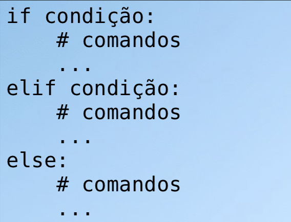 | 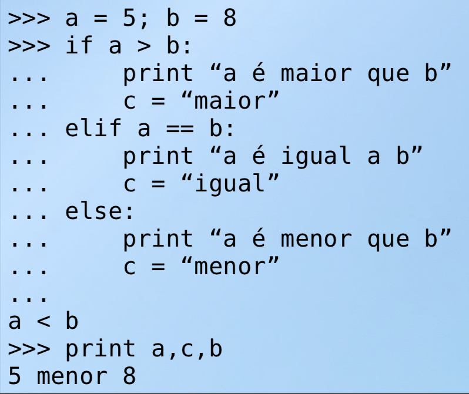 |
| Notação | Exemplo |
|---|---|
| 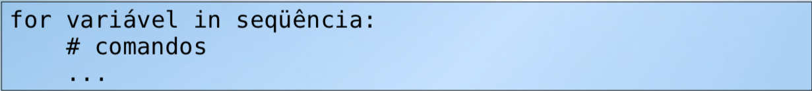 | 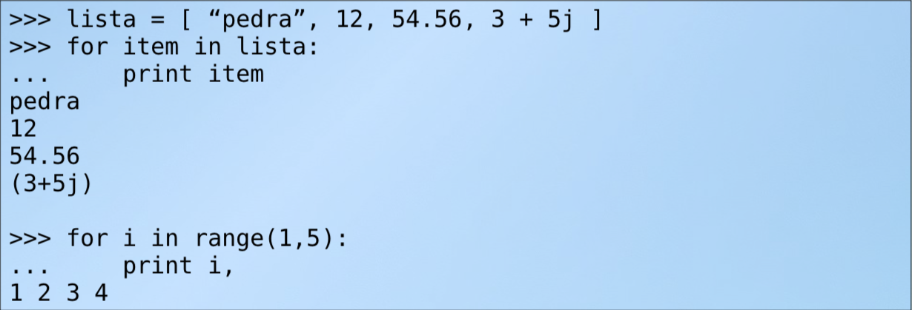 |
| Notação | Exemplo |
|---|---|
| 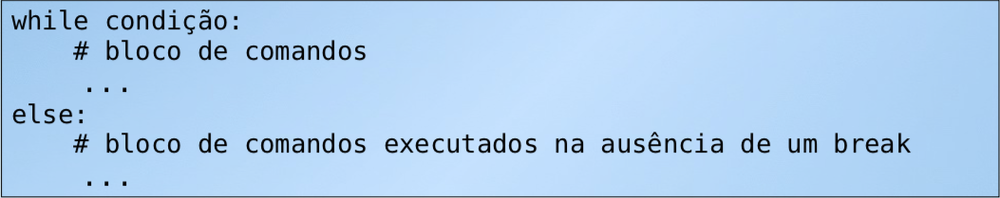 | 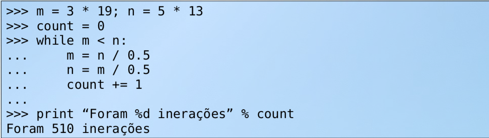 |
| Notação | Exemplo |
|---|---|
| 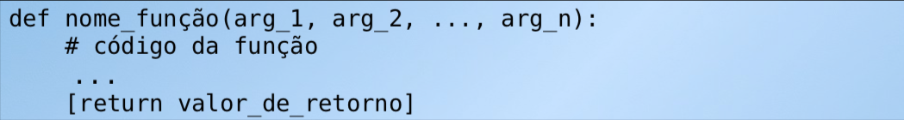 | 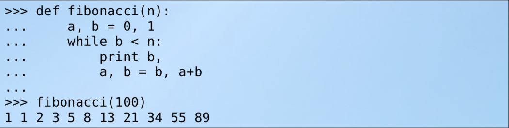 |
Funções podem ter parametros com valores padrão. Veja o exemplo: 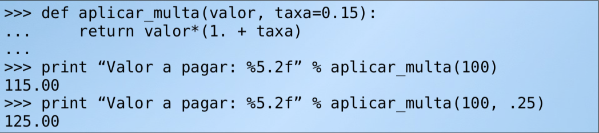 No exemplo acima, a função aplicar_multa tem dois parametros: valor e taxa. No entanto, o segundo parametro (taxa) tem uma valor padrão (0.15). Isso implica que ao chamarmos a função não precisamos passar o segundo parametro se o valor dele for igual ao valor padrão(primeiro print do exemplo).
E funções podem ter número de parâmetros variáveis: 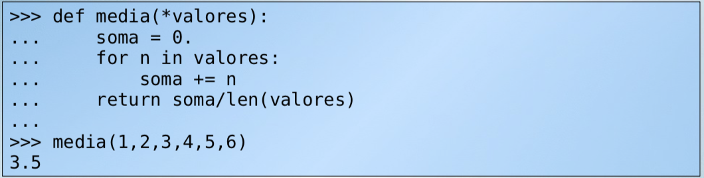 No exemplo acima, que calcula a media dos valores passados omo parâmetros, os parametros são informados a função na forma de uma lista de nome *valores.
Observe que foi necessário acrescentar o "*" antes da palavra valores. Isso foi feito para informar a função media que a variável valores não é um parâmetro simples e mas sim vários parâmetros.
A função len é uma função muito útil que pode ser utilizada para saber o comprimento de uma string ou número de elementos de lista. Veja o exemplo: 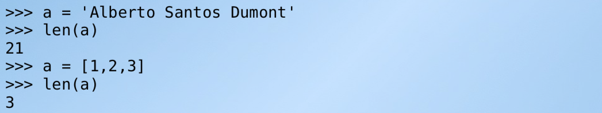
http://turing.com.br/pydoc/2.7/tutorial/introduction.html http://turing.com.br/pydoc/2.7/tutorial/modules.html http://turing.com.br/pydoc/2.7/tutorial/controlflow.html http://turing.com.br/pydoc/2.7/tutorial/datastructures.html